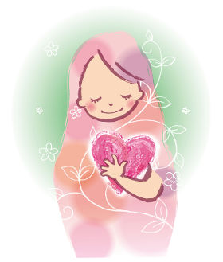
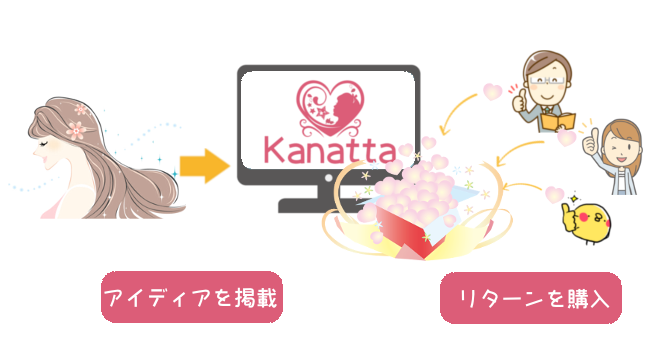
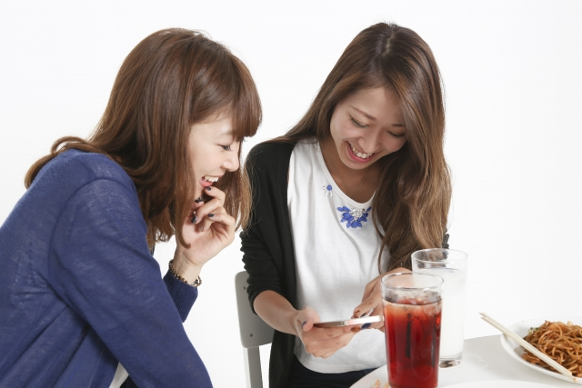

Kanattaの想い
大きな夢が叶った、日常が理想に適ったを組み合わせてKanattaができました。
日々頑張っている女性を応援していくために、女性エンジニアチームを結成し、立ち上げたサービスです。
今までになかったことに挑戦する方から、日常のささいなことを解決したい方まで、幅広く使ってたくさんの「かなった」を実現していただけたらと幸いです。

クラウドファンディングとは

クラウドファンディング(CrouwdFunding)とは、群衆（crowd)と資金調達(funding)を組合せた造語です。
「女性の自立や働き方についての講演」というイベントを開催したい、「ネイルのお店を出したい」など、叶えたい想いを実現するために、たくさんの人からお金を集める仕組みです。
アイデアやプロジェクトを持つ人（起案者）が、インターネットを通じて呼びかけて、共感した人が出資し支援をしていく（支援者）ことで、実現していきます。
大きな流れとしては以下の流れで行われます。
①叶えたい想いやアイデアがある
②Kanattaに投稿
③Kanattaに掲載
④支援金が集まる
⑤夢が叶う
アイデアやプロジェクトを持つ人について（起案者）
アイデアやプロジェクトを持ち、それをKanattaで実現していく人を起案者といいます。
アイデアやプロジェクトは何でも構いません。
また、プロジェクトの立ち上げ自体は無料で行うことができます。
プロジェクトが達成した際には、達成金額の※※％をKanattaに支払う必要がありますが、
達成した場合のみであるため、ノーリスク・ハイリターンでチャレンジすることが出来ます。
支援者から資金を受け取る代わりに、支援者にはリターンと呼ばれる、資金に対する見返りを用意する必要があります。
リターンによって支援金や支援してくださる人数も変わってきますので、よく考えましょう。
例１「女性の自立に向けた働き方の講演をしたい」といったプロジェクトでしたら、例えば講演会への参加無料券など。
例２「ネイルのお店を開設したい」といったプロジェクトでしたら、ネイル一回無料券、ネイルのお手入れセットなど。
活動をアピールする中で、活動を応援してくれる人が現れます。
プロジェクトの内容によっては、メディアに注目されるような取り組みとなったり、大手出版社の取材を受けることなどもありえます。
アイデアやプロジェクトを通して何を得たいのか、どういった事を実現していきたいのかをイメージしながら、
『立ち上げ（プロジェクト作成の流れ）』の流れに沿って実行してください。
立ち上げ（プロジェクト作成の流れ）
1.企画
2.投稿
3.審査
4.プロジェクトを作成
5.最終確認
6.プロジェクト公開
7.活動報告
8.プロジェクトの達成
9.プロジェクトの実行、リターンの送付
（詳細）
1.企画
どういったプロジェクトを立ち上げるか決めてください
コンセプト、タイトル、目標金額、開催期間、リターンなどの概要を決めてください。
2.投稿
Kanattaに投稿してください。
3.審査
投稿した企画書が、クラウドファンディングやKanattaに適しているかを精査します。
また、企画の信憑性や実効性などを審査します。
4.プロジェクトを作成
企画書の詳細をつくってください。
必要に応じて担当者と練り上げていきましょう。
5.最終確認
Kanatta運営者が確認します。
確認が問題なければプロジェクトを公開します。
6.プロジェクト公開
プロジェクトを公開して、世の中に広めていきましょう。
フェイスブックなどSNSで拡散したり、プレスリリースなどを行い、
一人でも多くの方にプロジェクトを知ってもらいましょう。
7.活動報告
プロジェクトの活動報告をしましょう。
掲載期間中、何もしなくてもお金が集まるわけではありません。
ご自身で情報の拡散を行ってください。
また、支援者のフォローアップもしっかり行っていきましょう。
8.プロジェクト達成
目標金額を達成したら、達成している金額から手数料を引いた金額をお支払します。
ここからがスタートです。
9.プロジェクトの実行、リターンの送付
プロジェクトの実行を行ってください。
また、支援者に約束していたリターンの送付等を行いましょう。
支援する人について（支援者）
起案者が立ち上げたプロジェクトに対して出資支援する人を支援者といいます。
プロジェクトの内容を見て共感したり、リターンに興味がある場合など、
そのプロジェクトを支援したいと思った時に、是非少額からでもご支援をお願いします。
◯支援の流れ
1.プロジェクトを探す
2.応援したいプロジェクトを決めて、応援
3.プロジェクトが達成されればリターンが手に入る
Kanattaの魅力
①女性のためのクラウドファンディングサイトであること
女性専用のためのサイトのため、支援者も女性が多くなります。
そのため、プロジェクトの共感を得やすく支援が集まりやすくなります。

②アシスタントの存在
必要に応じて、アシスタントをつけることが出来ます。
プロジェクトが成功できるようアシストを受けることができます。
③リアルクラウドファンディング
2ヶ月に1回、リアルクラウドファンディングの場があります。
インターネットを通してだけではなく、
リアルな場で人が集まって、直接想いをプレゼンする場を利用できます。
よくある質問
＜起案者として＞
Q1.
誰でも申し込むことができますか？
A1.
女性のみ申し込むことができます。
女性であれば個人、団体、年齢問わずお申込みすることができます。
Q2.
アイデアしかありません。クラウドファンディングは初めてですが、挑戦可能でしょうか。
A2.
まずはアイデアがあればご相談ください。
アシスタントをつけることが可能ですので、必要な情報を確認しながら一緒にアイデアを形にしていきましょう。
アシスタントの費用はプロジェクトが成功しない限り費用は1円も発生しません。経費の心配なく挑戦できます。
アイデアやプロジェクトが明確な方は、そのままプロジェクトの申請にお進みください。
Q3.
プロジェクトを公開するためにどのくら費用がかかりますか？
A3.
プロジェクトの公開は無料で行なえます。プロジェクトが不成立の場合は手数料等かかりませんので、安心して始めてください。
Q4.
それほど知り合いが多くないため、支援者が集まるか不安です。
A5.
おっしゃる通り、起案者の知り合いの多さはプロジェクトを成功させる上でとても重要です。
最初の20%の支援は、起案者様の身内の方の支援であるとも言われているため、起案者様ご自身でSNSで発信されることや、口頭で広げていかれることはとても重要になっていきます。
しかし、Kanattaを通して以下の様に世の中に伝えていくことが出来ます。
それによってどれくらいの方からの支援を集められるかは、起案者様のこれから次第です。
まずはプロジェクトを公開してみましょう。
◆女性のためのクラウドファンディング
Kanattaは女性のためのクラウドファンディングとなっており、多くの女性が閲覧するサイトとなります。
そのため、通常のクラウドファンディングよりも女性からの共感を得やすいサイトとなっています。
公開するプロジェクトが女性にとって役立つものであったり、いいイベントであれば支援が集まりやすくなります。
◆リアルクラウドファンディング
Kanattaでは直接想いを伝えられる場として、リアルクラウドファンディングの場を設けています。
そういった場で想いをプレゼンをして支援者を増やすこともできます。
◆プレスリリース
プレスリリースを通して、報道機関やマスコミにプロジェクトのことを伝えることができます。そこから話題になれば、支援も多く集まるようになります。
Q5.
目標金額の設定に制限はありますか。
A5.
制限はございません。
基本的には『All or Nothing型』のため必要最低限かつ達成可能な金額を設定されることを推奨します。
Q6.
手数料はかかりますか？
A6.
プロジェクトが成功した場合、達成金額の8%の手数料、5%の決済手数料がかかります。
コンサルタントがいる場合は、さらに2%手数料がかかります。
Q7.
プロジェクトが成立しなかった場合は、支援金やリターンはどうなりますか？
Q7.
「All or Nothing型」の場合は、支援金額が目標金額に集まらなければ、全額支援者様に返金されます。
「All-In型」の場合は、目標金額にかかわらず、期日前に集まった全額が起案者様に支払われます。支援者様には返金されません。
ただし、All-In型の場合は、イベント等の実施が決まっていたり、リターンが約束されていなければ審査が通りません。
＜支援者として＞
Q1.
支援したいプロジェクトがありますが、成功するかどうかわかりません。
仮に失敗した場合は、お金は戻ってくるのでしょうか。
A1.
「All or Nothing型」もしくは「All-In型」とあります。
「All or Nothing型」の場合は、支援金額が目標金額に集まらなければ、全額支援者様に返金されます。
「All-In型」の場合は、目標金額にかかわらず、期日前に集まった全額が起案者様に支払われます。支援者様には返金されません。
ただし、All-In型の場合は、イベント等の実施は決まっている上での募集のため、基本的にリターンは受けられます。
まずは使ってみる
プロジェクトをつくるプロジェクトを探す